Stupid Spherical Harmonics Tricks
Table of Contents
Stupid Spherical Harmonics Tricks note.
<!– more –>
Stupid Spherical Harmonics Tricks
Introduction
Harmonic 函数是 Laplace 方程的解，其广泛应用于多个领域。Spherical Harmonics 是在球坐标系下求解 Laplace 方程时，进行变量分解后（分解为角度部分和半径部分），角度部分的解。SH 已经被应用于物理学中，求解一些潜在的问题，例如，热学方程（模拟温度随时间的变化），以及引力场和电场。其也被应用于量子化学和量子物理学，用于模拟原子中的电子结构以及量子角动量。图形学中，其被应用于模拟散射现象。在计算机图形学中，其也被广泛使用，早期用于模拟体积散射效果，无全局阴影的环境反射，非漫反射的离线光照传输模拟，BRDF 表示，模拟光源的发射。近期的一些例子包括大气散射和计算机视觉。
尽管 Spherical Harmonics 看起来令人生畏，其实 SH 非常的简单明了。其是类似于单位环上的傅里叶基函数，并且很易于数值求解。和信号处理中使用的傅里叶基函数一样，当需要截断基函数时，要倍加小心，从而最小化"ringing" artifacts 的出现。
Background
Define
Spherical Harmonics 定义了一组在球 S 上的正交基函数，且这组基函数是标准正交基函数。
- 标准正交基函数 这组基函数中任意两个不同的基函数在定义域上乘积的积分为 0，而任何一个基函数和自己乘积的积分为 1。
尽管球面坐标对于求积分非常便利，但是也可以将球谐基函数表示为多项式形式。
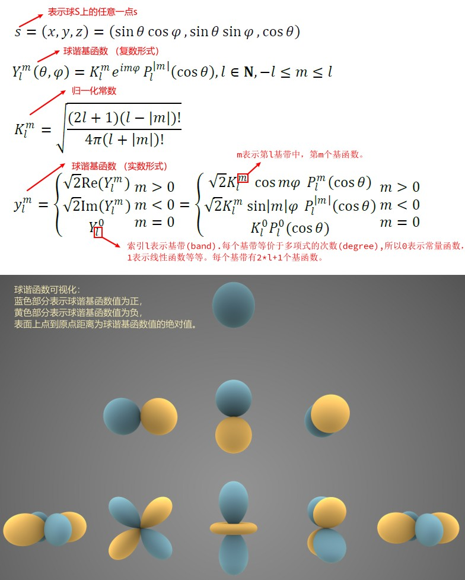
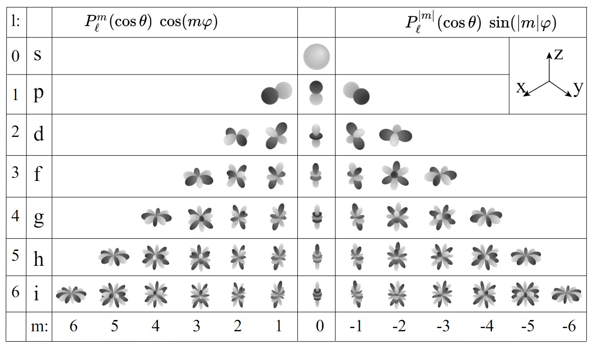
上面图中，中间一列的函数被称为 zonal harmonics(ZH)，这些函数具有绕 z 轴和绕 zeros(函数值为 0 的点)旋转对称性，在球上平行于 XY 平面的点都等值。l=|m|的函数被称为 sectorial harmonics。
另一种可视化 SH 的方法如下，其使用参数化的展开到平面上的 cube map 来表示：
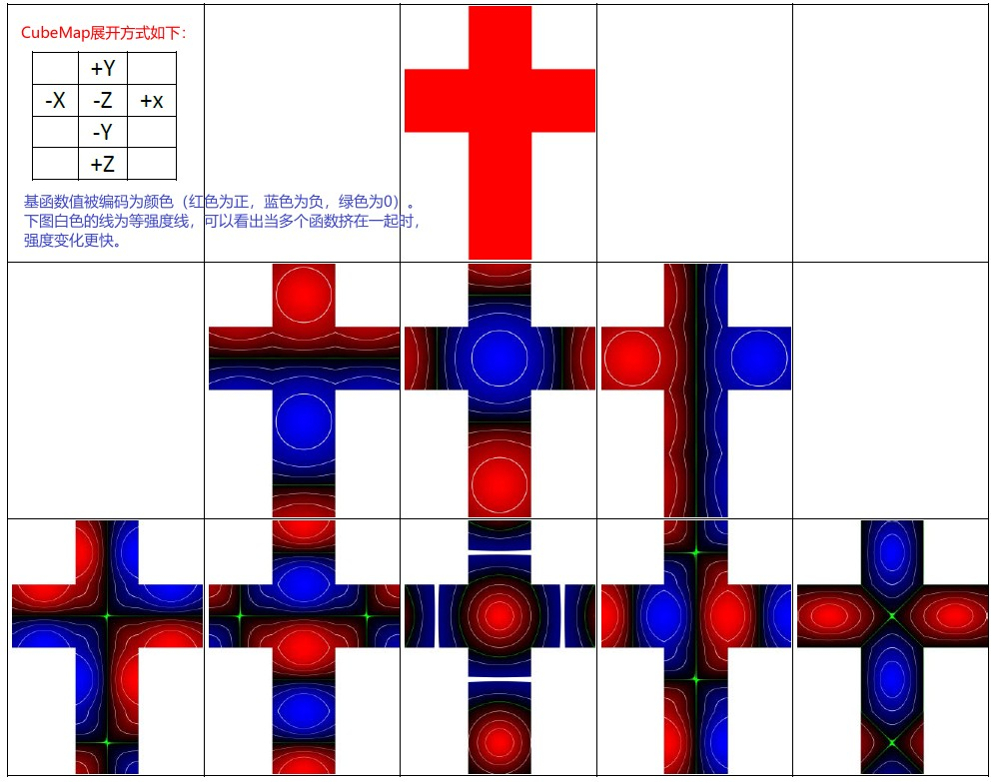
下图为 SH 基函数列表：
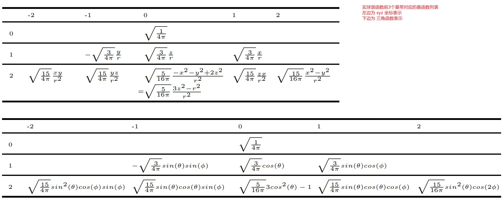
Projection and Reconstruction
因为 SH 基函数为正交函数，定义在球 S 上的标量函数 f 最小二乘法投影到球谐基函数上就可以得到 f 对应的球谐系数，利用这些系数就可以重建 f 函数。
随着基带数量增多，重建精确性会变高。本篇文章专注于 f 函数的低频近似，对于更高频的表示，其他类型的基函数可能是更好的选择。
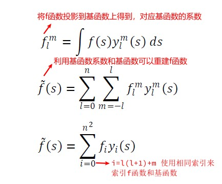
从上面最后一个公式可以清晰看出，求解 f 函数在 s 方向上的近似值，只需要对 n*n 个 f 函数的基函数投影系数 fi 点积基函数在 s 方向上的值 yi(s)。第一个系数 f0 表示函数 f 在球上上的平均值，有时候称其为 DC 项。
Properties
Basic Properties
旋转不变性
给定一个函数 g(s) = f(Q(s)) , 其表示对 s 进行 Q 表示的旋转操作后，求旋转后 s 对应的 f 函数的值。旋转不变性，表示只需要对 f(s)对应的基函数系数 fi 进行变换得到新的系数 fi'，就能保证使用新的系数 fi'，还原出函数 g(s)。
也就是说，SH 投影旋转后的函数 g 得到 g(s) 的 SH 表示 g'(s)，对 f 的输入进行旋转 Q，然后再将 f(Q(s)) 进行 SH 投影得到 f(Q(s))的 SH 表示 f'(Q(s))，旋转不变性表示： g'(s) = f'(Q(s))
旋转不变性，表示原函数发生了旋转，只需要对生成的广义傅里叶系数进行变换，就能保证变换后的系数能等价还原出新函数。在图形渲染上的表现就是，当光源发生旋转后，我们只要同步的计算出变换后的广义傅里叶系数，就能保证画面的光照效果不会抖动跳变。旋转不变性，并不是表示源函数发生旋转后，对重建结果没有影响，而是表示通过对系数与匹配的旋转进行变换后，能等价的还原出旋转后的函数。
Games202 描述： 分布在球面上的光 L 发生旋转后，需要重新计算光对应的 SH 系数(即 重新将 L 和 SH 基函数进行积分得出 SH 系数)，L的旋转等价于对 SH 基函数进行相反的旋转，SH 基函数有一个很好的性质：旋转一个基函数可以由同级的 SH 基函数线性组合来表示。
正交完备性
由于 SH 基函数的标准正交性，任意两个 SH 函数积的积分只需要对这两个函数的系数向量进行点积就可以了。
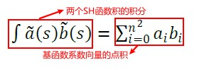
通过将函数投影到 SH 空间，在球上两个函数乘积的积分，就可以转化为 SH 空间 SH 系数的点积。
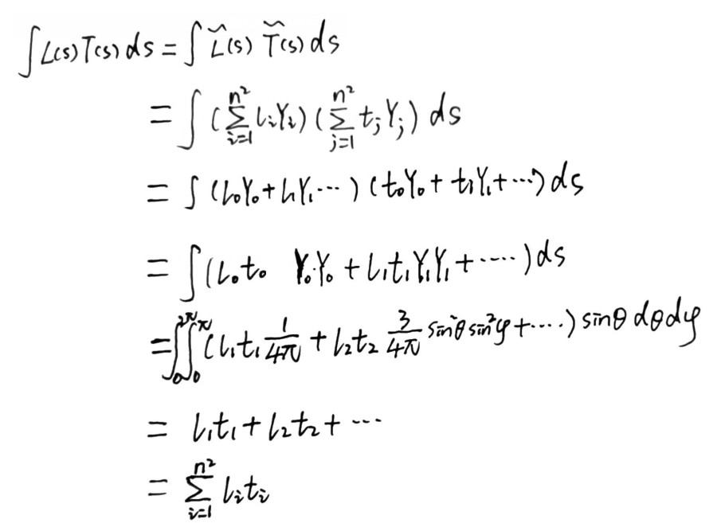
Convolution
给定圆对称的核函数 h(z)，可以按照下列方式生成 h 和 f 的卷积函数。h必须是圆对称的，这样就可以保证卷积函数依然可以在球 S 上表示，而不是在旋转组 SO(3)上。
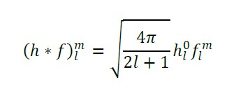
这相当于简单使用 h 对应的 m=0 的项的系数，对 f 的每个基函数系数进行缩放。
Rotation
Rotation 解释 1
就像前面提到的一样，SH 对于旋转是封闭的。SH 旋转矩阵成块状结构，每个基的旋转是旋转矩阵中独立的块，独立块为（2l+1)*(2l+1) 大小的子矩阵。有很多种方式用于求解这些旋转矩阵，对于低阶情况（2阶及 2 阶一下）求解非常简单，对于高阶情况，将旋转矩阵分解为 zyz 欧拉角会更容易一些。
Rotation 解释 2 (来自 Spherical Harmonic Lighting 文档)
由于 SH 基函数为一组标准正交函数，因此不同基带的 SH 投影系数在线性变换操作中不会相交。也就是说，我们可以使用旋转矩阵旋转一个 SH 系数向量为另一个 SH 系数向量，旋转矩阵有如下形式：
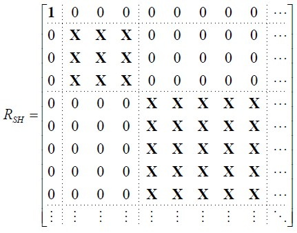
下图为构造旋转矩阵的方法：
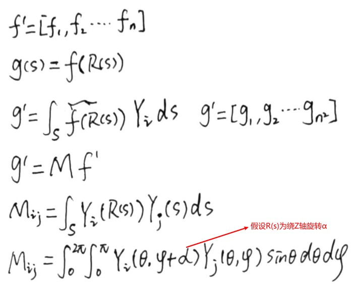
由此可以得到绕 Z 轴旋转α的矩阵为：
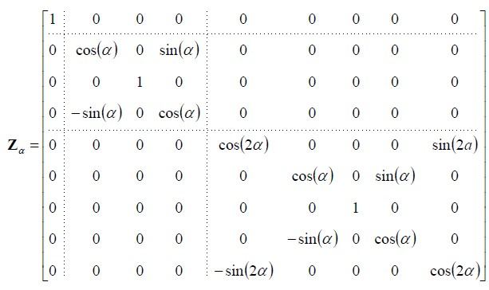
绕 X 轴旋转 90 度的矩阵如下：
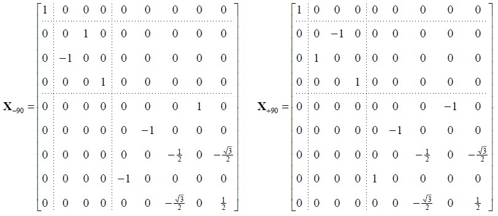
有了上面的矩阵，利用 Z(α)Y(β)Z(γ) 欧拉角公式，我们就可以表示任意旋转，其中绕 Y 轴的旋转可以使用 X(-90)Z(β)Z(+90)表示。

上面的矩阵没有处理万向锁问题。难到我们需要使用四元数来代替么？我们可以利用一些 trick，避免欧拉角的问题。3D 空间中旋转的一个基础属性是无数的对称性，我们可以利用该优点。
给定任意一个 3x3 旋转矩阵 R，我们可以由此求出 ZYZ 欧拉角α、β、γ：
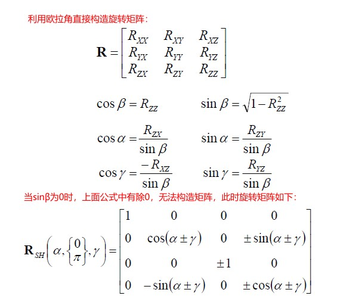
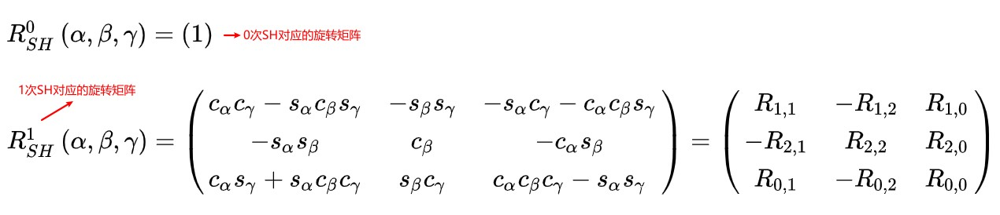
Zonal Harmonics
函数的 SH 投影绕轴具有旋转对称性时被称为 Zonal Harmonics。如果该轴为 Z 轴，则该函数的零值将形成恒定纬度的线，并且函数只依赖于𝜃。函数的基函数系数在每个基带上只有一个不为 0，此时 n 阶的函数就可以用 n 个系数来代替 n^2 个系数。
ZH 已经被用于近似 transfer，其是散射理论中表示 phase 函数的通用方法。在本文中，广泛使用 ZH 模拟光源。旋转 ZH 比旋转 SH 更加简单，给定函数的 ZH 系数 \(z_l\) , 通过下面公式可将其旋转到新的方向 d：
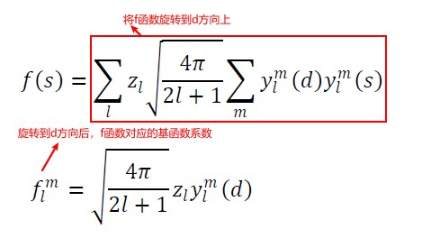
SH Products
SH Products 解释 1 (来自 StupidSphericalHarmonics 文档)
使用 n 阶球谐表示两个函数 f 和 g，这两个函数的乘积投影到 SH 基函数上得到对应基函数的系数如下：
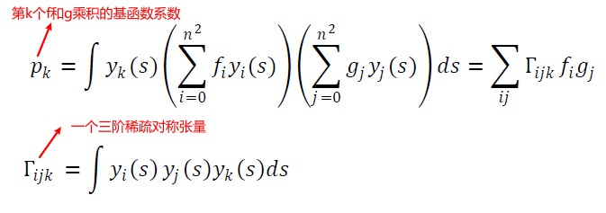
因为 SH 为多项式，多项式积的最大的阶数为 2n-2，这意味着其具有 2n-1 阶的非零系数。随着相乘的函数数量增加，将越来越难处理，通常的做法是早点截断相乘。非零系数的数量很大，因此生成高效代码时需要非常小心。一个特殊情况是，如果 f 函数是固定的（例如：distant lighting 的情况），你可以计算一个乘积矩阵，其可以显著减低消耗。该矩阵是对称矩阵，可以使用下面方程来构建该矩阵：
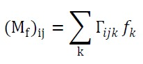
计算和函数 g 的乘积只需要使用上面矩阵和 g 对应的基函数系数向量相乘就可以了。
SH Products 解释 2 (来自 Spherical Harmonic Lighting 文档)
已知 SH 光源 L'(s), 物体表面 SH 遮挡项 T'(s), 求：考虑了遮挡项的 SH 光源 Q'(s)，即，我们需要求 L'(s)*T'(s) 投影到 SH 的系数。我们可以构造一个线性变换，其可以将 L'(s)的 SH 投影系数直接变换为 Q'(s)的 SH 投影系数，该变换适用于任意的 L'(s)。
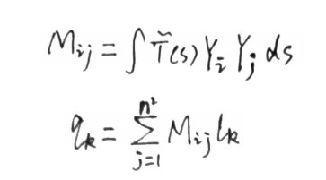
上面这种方法有下列几个问题：
- 我们不会为场景中每个顶点存储一个矩阵。（尽管矩阵比较稀疏，为每个顶点存储 SH 球谐系数依然很耗费）
- 我们也不希望为每个顶点执行一次矩阵乘。
- 参考资料
- Spherical Harmonic Lighting http://silviojemma.com/public/papers/lighting/spherical-harmonic-lighting.pdf
- http://www.patapom.com/blog/SHPortal/
- Spherical Harmonic Lighting http://silviojemma.com/public/papers/lighting/spherical-harmonic-lighting.pdf
Irradiance Environment Maps
Irradiance Env Map 原理
解释 1
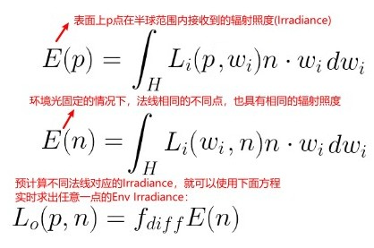
上面公式计算所得的 E(n)分布在球上，将 E(n)存储在 CubeMap 或 2D textrue 中就是 Irradiance Env Map。也可以使用 SH 球谐基函数表示 E(n)，这样就不需要存储贴图了。3阶 SH 近似已经足够好，但是如果光源是 HDR 的话，可能需要考虑使用 5 阶 SH。
使用 SH 基函数表示 E(n), 可以不生成 Irradiance Env Map, 直接从 radiance map 得到 E(n) 的 SH 表示。详情请参考下面 解释 2.
附录中，计算 SH 光照的方法被 unity 采纳，具体数据布局和计算如下：
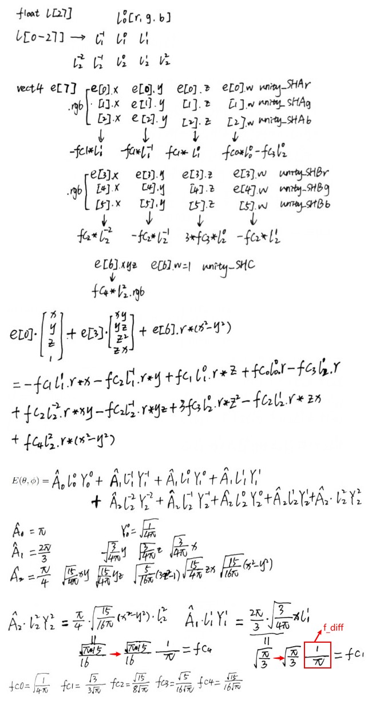
解释 2 (An Efficient Representation for Irradiance Environment Maps)
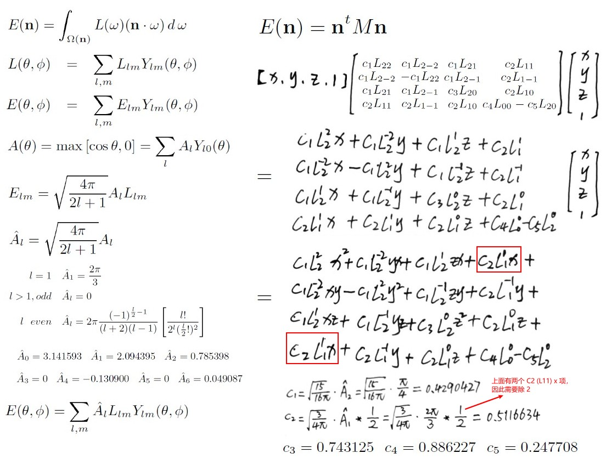
上面描述了直接从 radiance map 得到 Irradiance Env Map 的球谐表示。
SH 近似分析
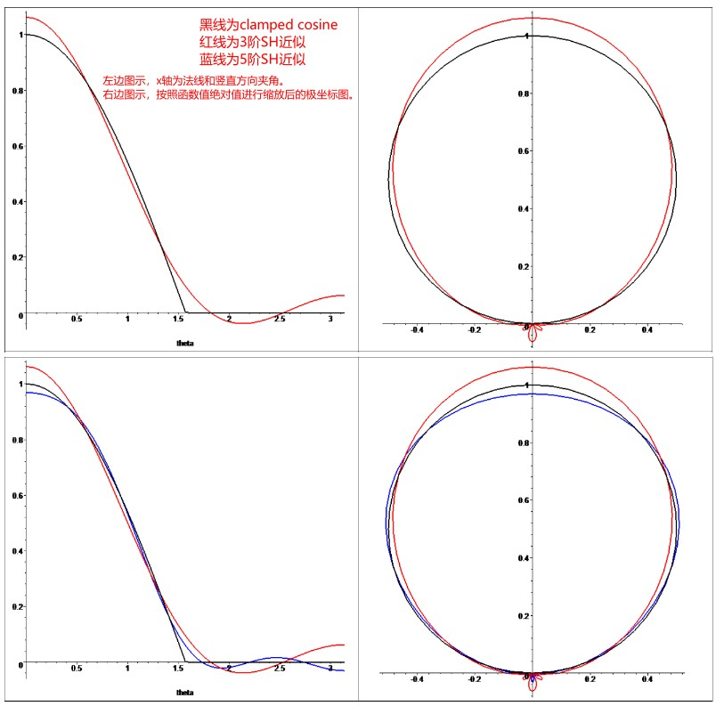
从上图可以看出，3阶 SH 在 theta = 0 时（北极处），近似值多了 1/16，并且在南极处有奇怪的 lobe，该 lobe 的长度为 1/16.
尽管上面的近似是精确的，但是，该近似可能会导致错误，特别是光源很亮的情况下。
Lighting Models
在 SH 中表示 lighting，有很多种方式。最简单的方式就是将 cube map 上存储的 lighting 投影到 SH 上，但是，也有一些解析模型，求解不昂贵，将其显示给美术人员(artists)会很有用。
Projection from Cube Maps
// 利用蒙特卡洛估计量计算 l和球谐积函数的积分，得到l对应的球谐参数 float f[],s[]; float fWtSum=0; Foreach(cube map face) { Foreach(texel) { float fTmp = 1 + u^2 + v^2; float fWt = 4/(sqrt(fTmp)*fTmp); s = EvalSHBasis(texel,s); f += t(texel)*fWt*s; // vector fWtSum += fWt; } } f *= 1/fWtSum; // area of sphere
设当前采样方向为 texel = (x, y, z)
- u,v 为对应面的 uv 坐标，当前 face 为+X，则(u,v) = (y,z)。
- t(texel) 为 texel 方向对应的贴图颜色。
- EvalSHBasis(texel, s) 计算 texel 方向上的 SH 基函数的值。
- fWt 为单前采样的权重
- fWtSum 为采样的权重和
- fTmp 为采样方向的长度平方 \(r^2=w^2+u^2+v^2\) （w=1 因此假设了 cubeMap 对应的立方体边长为 2）
- s[] 中存储 texel 方向上 SH 基函数的值。假设使用 3 阶球谐，则一共有用到 9 个 SH 基函数，s中一共需要 9 个元素。
- f[] 中存储的就是 l 对应的 SH 基函数系数。假设使用 3 阶球谐，则一共有用到 9 个 SH 基函数，使用 rgb 表示辐射率 L，f 中一共需要 27 个元素。
fWt 计算分析：
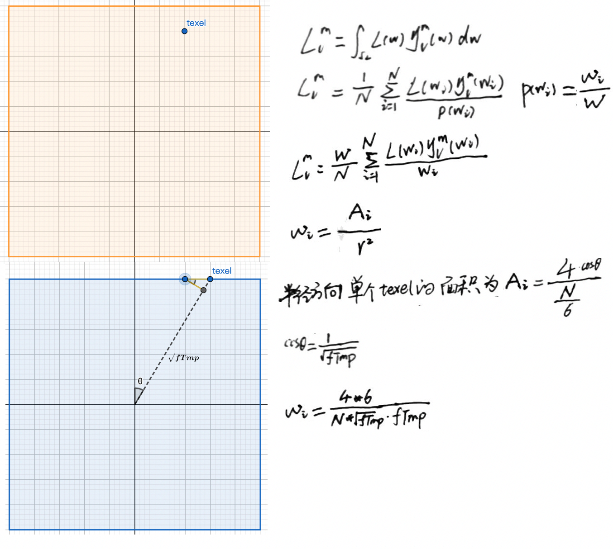
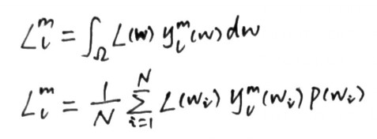
- 上面解释参考了该文 https://zhuanlan.zhihu.com/p/63755519
下图为使用这种技术将 CubeMap 转化为 1-6 阶 SH 函数，然后使用 SH 函数重建 CubeMap 的结果，最后一张图为原始 CubeMap：
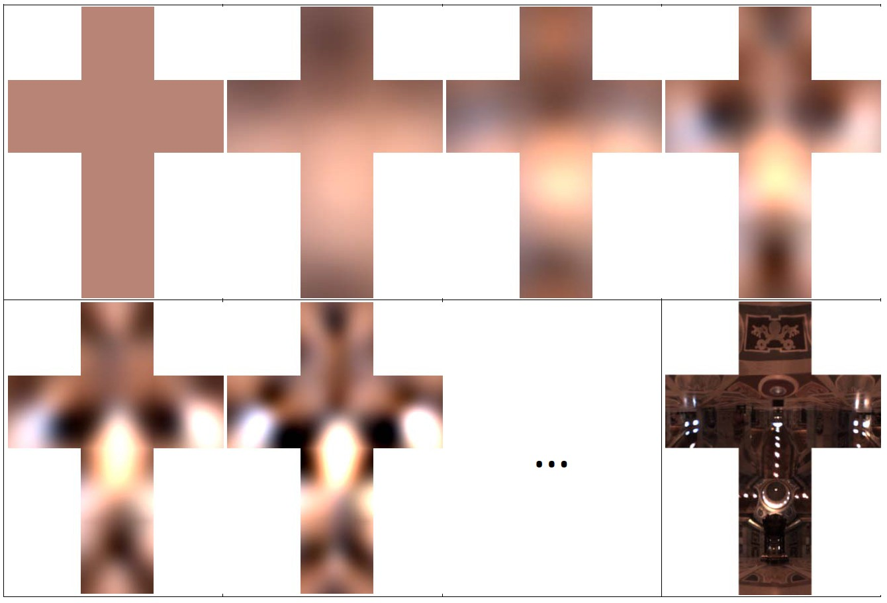
采样 CubeMap 的原理
设采样向量为(x,y,z)
计算 x,y,z 中绝对值最大的分量，假设 z 分量绝对值最大，且 z 分量为正数。则，此时应该对 CubeMap +Z 面对应的贴图进行采样。
计算（u,v)。假设 CubeMap 正方体为单位正方体，将 z 分量缩放为 0.5，需要的缩放因子 scale=0.5/z，因此，(x*scale,y*scale,z*scale) 为采样向量(x,y,z)对应的 CubeMap 上的点，假设该点为 P。则点 P(x*scale,y*scale,z*scale)的范围为(-0.5,-0.5,0.5)->(0.5,0.5,0.5)。将点 P 映射到(0,0,0.5)->(1,1,0.5)，即可得到 (u,v) = scale*(x,y,z)+0.5。
下图展示了采样 CubeMap 的原理：
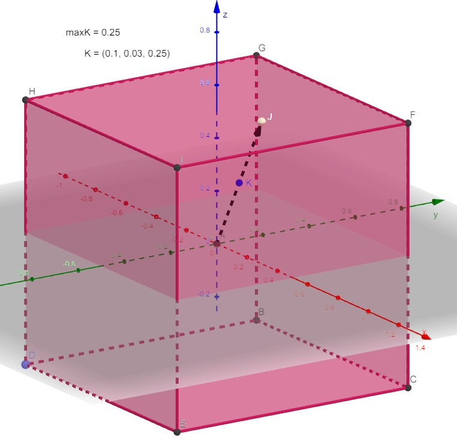
./StupidSphericalHarmonics/sample_CubeMap.ggb
Analytic Models
方向光计算起来很简单，你只需要求解指定方向的球谐基函数，并且进行合适的缩放。
球形光源上，球面每个点发出的辐射能量都相同，因此对于场景中任意一点 P，在 P 点选择任意一个方向，光照在该方向两侧分布是对称的，所以可以使用 ZonalHarmonics 高效求解球形光源。如下图所示：
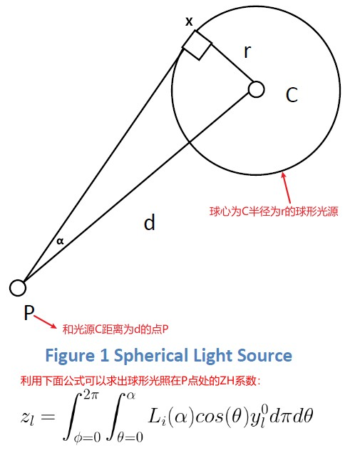
上面的技术还可用于模拟锥形常量光源。Softer Cone 则可以通过在可见项上加一个衰减来模拟。
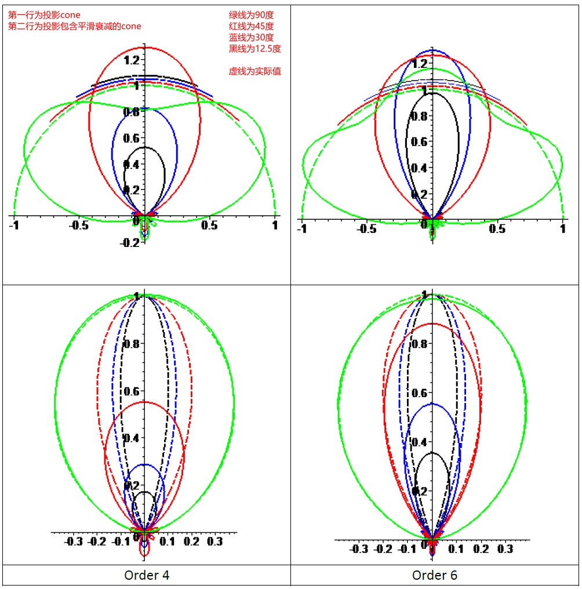
从上图可以看出，添加了衰减的 cone 更精确。
Normalization
如果光照的范围为[0,1]，则将 radiance 向量 L 进行归一化会很方便，这样当一个没有被遮挡的接收者，且其法线直接指向光源，那么该接收者反射的辐射率 L 为 1。(Tips: 归一化保证了能量守恒)
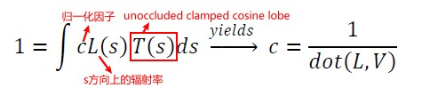
计算归一化因子时，只利用渲染中所使用的 SH 基函数（例如，假设渲染使用 3 阶 SH，则计算归一化因子只使用前 9 个 SH 基函数）。当把 T 和+Z 对齐时，可以计算出 T 对应的前 6 个 SH 基函数系数如下：
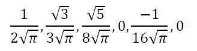
对于 Analytic 灯光，可以使用 Analytic 归一化项。
- 夹角为α的 cone 灯光其归一化项为： 1/sin^2(α)
- 方向光的归一化项为： 16π/17 （此处假设没有高于 4 阶的光，对于 5 阶或 6 阶来说，方向光的归一化项为 32π/31 ）
- ambient 环境光的归一化项为：2sqrt(π)
上面 clamped cosine SH 基函数系数推导，方向光归一化系数的推导，可以参考下面文章：
上面链接文章中，求 clamped cosine 对应的 SH 系数时，首先假设 Normal 和+Z 对齐，计算出 clamped cosine ZH 系数。然后，将系数旋转到方向光方向。旋转到方向光方向是为了统一球谐系数的坐标系，否则就不能用系数相乘来表示积分了。
Extracting Conventional Lights from SH
解释 1
给定一个 SH 光照向量（假设使用 3 阶 SH 表示，则该向量有 3*9=27 个分量），可以使用一个方向光和一个环境光来近似该 SH 光照。通过让下面错误函数足够小，来实现近似：
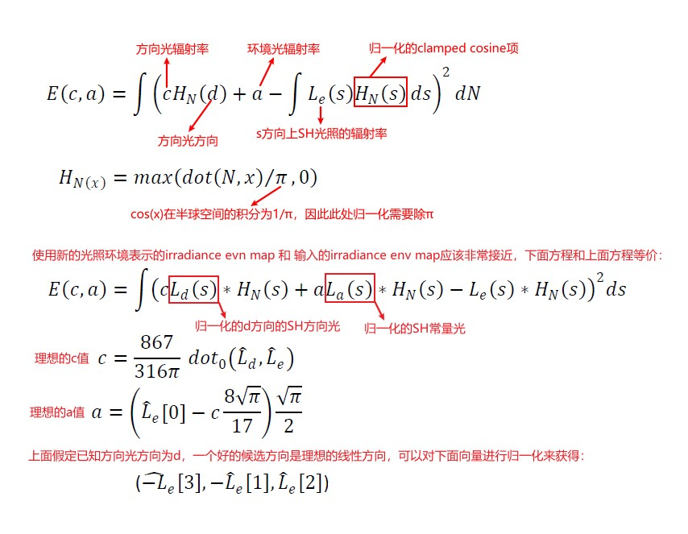
解释 2 (Extracting dominant light from Spherical Harmonics)
- 求方向光方向：求 SH 光照取最大值时，对应的方向，该方向即为方向光方向。
- 求方向光亮度：求出归一化因子 c，让 \((Le-sLd)^2\) 取最小值，即可求出亮度 s。
- Extracting dominant light from Spherical Harmonics http://simonstechblog.blogspot.com/2012/02/extracting-dominant-light-from.html#sh_extractDominantLight
TODO Extracting Multiple Lights
Ringing
Ringging 也被称为吉普斯现象，是信号处理中常见的问题。当不连续的信号投影到有限的傅里叶基函数，在不连续的地方会出现过冲和下冲（overshoot and undershoot）。对于连续函数，如果做截断处理，也会展现出类似的现象。我们在 lighting models 和 SH 表示 irradiance evironment maps 中(该部分内容将 clamped cosine function 投影到 SH 基函数)已经见到这种问题。有两种方法用于解决这类问题：
- 使用 sigma 因子对截断的投影系数进行窗口化。在 SH 中可以简单应用该方法。
- 最小化某种形式的变函数，而不仅仅使用标准的最小二乘误差函数。
Windowing
Minimizing a functional
Content Sensitive Windowing
SH Products
计算两个 SH 表示的函数的积非常有用。下面一些情形会使用到 SH Products：
- 基于巨大的飞行物体，在 skylight 模型上挖一个洞（可见项和 light 相乘）。
- 在近似全局照明时，通常会将 SH 光照和 SH 可见性函数相乘。
- 缩放或修改 SH light probe。通过乘一个[0,1]范围的常数，可以近似云。
在频率空间计算乘积非常复杂，其归结为应用一个 triple product tensor 乘两个 SH 向量。
Products with a Constant Function
如果其中一个函数被使用多次，你可以构建一个被称为乘积矩阵的 dense matrix，其可以将三次乘积转化为简单的矩阵和向量乘积，这可以有效减低消耗。
Products with varying Orders
输出的阶数比较低是很常见的情况，例如：2次就可以表示局部的辐射率环境。这种情况下，可以有效减低复杂度，例如，计算两个 6 阶的 SH 函数，输出结果为 6 阶时，需要计算 2527 次乘和 1995 次加，而输出结果为 3 阶时，需要计算 933 次乘和 676 次加。
当两个函数中，有一个阶数比较低时，也可以减少消耗。
Product with Zonal Harmonics
如果其中一个函数为 Zonal Harmonic，你可以将另一个函数旋转到同一个 frame（因为对称性，旋转只需要两个 Euler 角），计算乘积然后再旋转回来。ZH 的稀疏明显减少了工作量，这样可以提高性能。两个 6 阶函数，其中一个为 ZH 且朝向 z，只需要 380 次乘和 249 次加。
Product with Analytic Function
如果其中一个函数有解析形式，解析方式计算乘积矩阵会更精确。
Misc
参考资料
- Notes on Spherical Harmonics in CG (1) https://zhuanlan.zhihu.com/p/73897562
- 球谐光照——球谐函数 https://zhuanlan.zhihu.com/p/153352797
- SphericalHarmonics https://en.wikipedia.org/wiki/Spherical_harmonics
- 球谐(SH)和预计算辐射度(PRT) https://zhuanlan.zhihu.com/p/63755519